Start here
This page is for you if you want to make an app (or a website, or a game) and you have never written code, the written instructions a program is made of. You will not need to learn to. Claude, an artificial intelligence assistant made by the company Anthropic, does the building; your job is to know what you want and to answer its questions. It will ask a lot of them at first, because a good plan is the difference between an app you love and one you have to start over.
Expect setting up to take one to two hours, in one sitting if you can. After that, Claude asks about your idea over several short sittings across a few days, sized to the time you tell it you have. You can stop at any point and pick up where you left off.
App Architect, the ready-made beginning of a project that this page belongs to, is private: it is kept on GitHub (a free website that keeps projects safe online, which you join in step 4), and only the people its owner has invited can see it. If you open its address before you are invited, GitHub shows a page saying Page not found, the same page it shows for an address that does not exist. That only means you have not been added yet; step 4 says how.
Every step below says what you should see on your screen. If what you see is a little different, that is usually fine: websites change their wording now and then, so look for the closest match. From step 1 on, you can also ask Claude at claude.ai: describe what you see, or paste a picture of your screen, and ask what to do.
Already have a project? If you have an app, a website, or a game of your own already, with its files in a folder on your computer and kept on GitHub, the starter can be added to it rather than starting a new one: your files and their history stay as they are. You can take the whole starter, or only the parts you choose from the menu of what it offers, which says what each part is for and what it gives you. Do steps 1 to 4 below as they are written, then follow a project you already have instead of steps 5 and 6. If you only want to send what your project has learned back to the starter, without adding anything to it, follow sending lessons from a project instead.
What you need before you begin
- A computer running Windows 10 or 11, a Mac, or Linux. On Linux, this page was tried on Ubuntu 26.04, Fedora 44, and Debian 13, each with the desktop it comes with, and it says where they differ. A phone or a tablet is not enough to build on, though you can follow along on one later.
- An email address you can open, to confirm new accounts.
- To be old enough: 18 or older for a Claude account (Anthropic's consumer terms, read on 2026-10-13), and 13 or older for a GitHub account (GitHub's terms of service, read on 2026-10-13).
- A paid Claude plan (Pro or Max) at claude.ai. The free plan does not include Claude Code, the part of Claude that builds things on your own computer. On 2026-10-13, Anthropic's pricing page (claude.com/pricing) listed Pro at 20 US dollars a month and Max from 100 US dollars a month. Prices change, and the page where you pay shows the price before you pay.
- Permission from whoever gave you this page: they add your GitHub account to App Architect so that you can see it, and Claude copies it to begin yours.
Everything else is free, and Claude will tell you before anything would cost money.
Step 1: get a Claude account
- Go to claude.ai and sign up. The page asks for your email address, or offers to use a Google or Apple account instead. Claude then sends you an email to confirm the address: open it and follow what it says.
- Know three things about the plan before you pay:
- It renews every month, and is charged each time, until you cancel. To cancel, open claude.ai, click your name or initials at the bottom left, choose Settings, then Billing, and press Cancel. The plan keeps working until the end of the month you already paid for.
- Its allowance is shared. What you use on claude.ai and what Claude uses building your project come out of the same allowance.
- The allowance can run out in the middle of a conversation. Claude then says when you can go on. Nothing you have done is lost: come back at that time and carry on.
- Choose the Pro or Max plan. If you are not offered a plan straight away, look for an option to upgrade in your account's settings. The page asks for a payment card; this is the one step on this page that costs money. Max lasts longer each day before it asks you to wait; Pro is enough to begin.
You know this step worked when claude.ai shows a page with a box for writing a message to Claude, and your account's settings show Pro or Max as your plan.
Step 2: install Visual Studio Code
To install a program is to copy it onto your computer so that it can run there, the way you add an app to a phone. Visual Studio Code (you may see it shortened to "VS Code") is a free program from Microsoft. Think of it as the workshop: it shows the files of your project on the left and a conversation with Claude on the right.
On Windows or a Mac, in your web browser (the program you use to visit websites), go to code.visualstudio.com and press the big download button. The site picks the right version for your computer. The browser shows the file as it downloads, usually near the top right or the bottom of its window, and puts it in your Downloads folder. On Linux, item 4 below takes the place of this one.
On Windows: open the downloaded file. Its name begins with
VSCodeUserSetup.A setup window for Visual Studio Code opens. It leads you through a few pages, each with a Next button at the bottom.
The first page is the license agreement, the terms for using the program. I do not accept the agreement is chosen at first: choose I accept the agreement, then press Next. On every page after that, keep the choices already made.
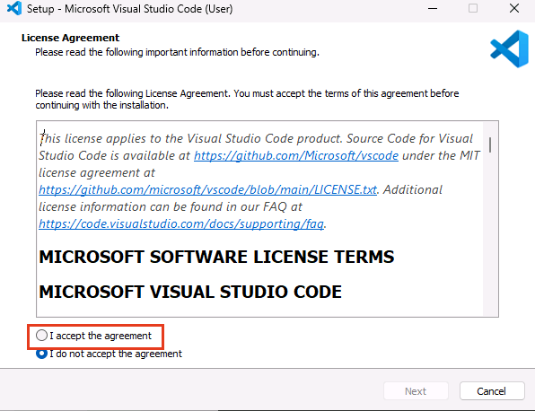
One page has a box labeled Add to PATH (requires shell restart). Leave it ticked. PATH is the list of places where Windows looks for programs, and this lets Claude find Visual Studio Code later.
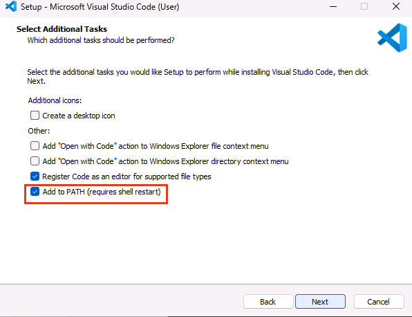
Press Install, and wait for the bar to fill. The last page has a box ticked to launch Visual Studio Code: leave it, and press Finish.
It never asks for an administrator password (the password some computers ask for before a change that affects everyone who uses them), and that is on purpose: this version installs for you alone.
On a Mac: open Finder, the Mac's window for browsing files: the smiling blue face in the row of icons along the bottom of the screen.
- Click Downloads in the left column of the Finder window. The download
is there as Visual Studio Code. If you see a file ending in
.zipinstead, double-click it, and the program appears beside it. - Drag Visual Studio Code onto Applications in the left column.
- Click Applications, and double-click Visual Studio Code. Your Mac asks whether you are sure you want to open a program downloaded from the internet. Choose Open.
- Click Downloads in the left column of the Finder window. The download
is there as Visual Studio Code. If you see a file ending in
On Linux: Visual Studio Code comes through the window your computer adds programs with, which asks once for the password you use to sign in to the computer. That is expected: a program added this way is for everyone who uses the computer, so the computer checks that you are allowed. Where this page says to press the Super key, it means the key with the Windows logo on most keyboards, at the bottom left.
First, close the welcome window if one fills the screen or stands in its middle the first time you sign in. On Ubuntu, it is titled Welcome to Ubuntu: press Next at its top right on each page (or Skip, where that is the button), and Finish on the last. On Fedora and Debian, it is titled Welcome to Fedora Linux or Welcome to Debian: press Skip. There, until it is gone, the Super key does nothing, and what you type next may go somewhere you did not mean.
On Ubuntu: click App Center, the orange shopping bag in the column of icons along the left edge of the screen. Click the search box at the top of its window and type Visual Studio Code. A list opens under the box: under Snap packages, choose code, with the blue icon. Its page names its publisher, Visual Studio Code, with a green tick. Press Install.
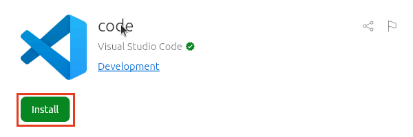
A window titled Authentication Required asks for your password: type the one you use to sign in to this computer, and press Enter. After a minute or two the button reads Open: press it.
On Fedora or Debian: the window that adds programs, called Software, does not offer Visual Studio Code, so it comes from Microsoft's website instead. Press the Super key and click Firefox, the web browser, first in the row of icons along the bottom of the screen. Go to code.visualstudio.com and press Download at the top right of the page. On the page that opens, in the box marked Linux, press Red Hat/Fedora on Fedora, or Debian/Ubuntu on Debian.
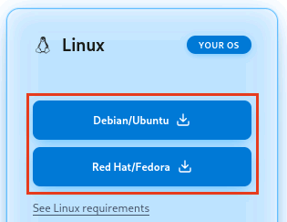
Firefox shows the download in a small panel at its top right. When the panel says Completed, click the file's name, which begins with
code. Software opens on a page titled code, marked Local file: press Install. It may say Potentially Unsafe and Provided by a third party, which only means that the program comes from Microsoft rather than from Fedora or Debian.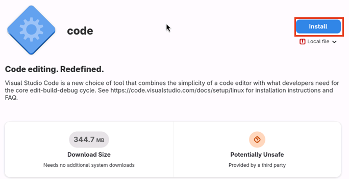
A window titled Authentication Required asks for your password: type the one you use to sign in to this computer, and press Enter.
Also on Debian: about a minute later, a window titled Configuring code asks Add Microsoft apt repository for Visual Studio Code?, with its box ticked. Leave it ticked, so Visual Studio Code keeps itself up to date, and press Next at its top right. The install waits until you do.
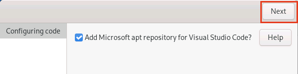
When it is done, Debian's page shows Open: press it. Fedora's shows only Uninstall…: close the window, and open Visual Studio Code as the next item says.
Open Visual Studio Code if it is not open already. On Windows, press the Start button and type Visual Studio Code; on a Mac, it is in Applications; on Linux, press the Super key, type Visual Studio Code, and press Enter.
The first time, a window titled Welcome to VS Code offers to sign you in to GitHub Copilot, Microsoft's own assistant. You do not need it: Claude is your assistant here. Choose Continue without Signing In at its bottom right, then Get Started on the page about colors.
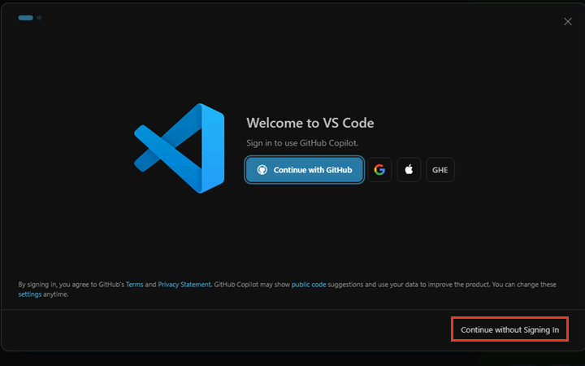
Visual Studio Code is now a window, usually dark, with a column of small icons down its left edge and a Welcome page in the middle. You can close the welcome page with the × on its tab. A panel on the right titled Chat belongs to GitHub Copilot, not to Claude: do not type in it. You can close it with the × at its top right.
Step 3: add Claude to Visual Studio Code
An extension is an add-on that gives Visual Studio Code a new ability. Claude Code is one. The pictures below were taken on Windows, and on Linux the same screens look the same.
On the far left of Visual Studio Code there is a column of icons. Click the one that looks like four small squares, with one of them set apart. A panel titled Extensions opens beside the column, with a search box at its top.
In that search box, type Claude Code. A list of results appears under it. Several have Claude in their names, and most are made by other people.
Choose Claude Code for VS Code, whose publisher, written under its name, is Anthropic with a small blue tick, and press its Install button. Visual Studio Code asks whether you trust the publisher Anthropic: press Trust Publisher & Install. After a few seconds a page titled Get started with Claude Code opens.
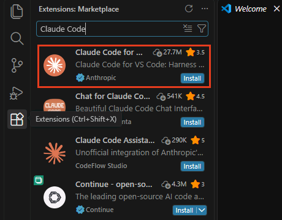
A Claude icon, a star with many points, appears in the column on the left. Click it, and a Claude panel opens and asks how you want to log in. Choose Claude.ai Subscription, your Claude account from step 1. Visual Studio Code asks whether to open the external website: press Open. Your browser opens claude.ai, asks you to log in if you are not already, and then asks whether to allow Visual Studio Code to use your account; allow it, then come back to Visual Studio Code.
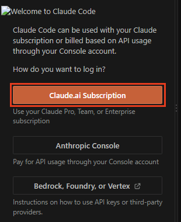
Choose which version of Claude does the work, and how hard it thinks. Under the box at the bottom of the Claude panel is a small button naming a version and an effort, such as Opus 5.5 High. If it already begins with Opus and ends with High, leave it. Otherwise press it, and a list titled Select a model opens:
- Choose the entry whose name begins with Opus. The number after it changes as newer versions come out; if there are several, take the one nearest the top.
- Under the list, beside Effort, are five dots, from the lightest thinking on the left to the hardest on the right. Press the middle one, so that it reads Effort (High).
Opus thinking hard writes the best plan, and the plan is what everything after it rests on. It uses your plan's allowance faster than the lighter versions, but the starter hands routine work to lighter ones by itself, so you never need to switch down. Fable, also in the list, is stronger still, and uses the allowance faster again; it is not needed. If no Opus is in the list, choose the entry marked (recommended).
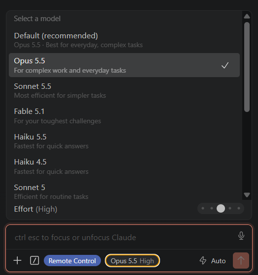
You know this step worked when the Claude panel shows a box at its bottom where you can type a message, and the button under it begins with Opus and ends with High. Do not type anything yet.
Step 4: make a GitHub account
GitHub is a website that keeps a copy of your project safe online, with every version of it, so nothing you make can be lost if your computer is. It is free.
- Go to github.com/signup. The page asks for your email address, a password, a username, and your country, or offers to continue with a Google or Apple account instead. The password needs at least 15 characters, or at least 8 with a number and a small letter among them. Pick a username you would not mind a stranger reading: everyone who sees your project sees it. The page tells you at once if a username is already taken. Then press Create account.
- GitHub shows a small puzzle to prove a person is signing up. It can take two or three tries; that is normal, not a mistake on your part.
- GitHub emails you a code. Type it on the page that asks for it. If nothing arrives within five minutes, look in your spam folder.
- GitHub may ask how you plan to use it, and offer a paid plan. You can skip the questions, and the free plan is all you need.
- Send your new GitHub username to the person who gave you this page, and wait until they say they have added you. GitHub also sends you an email inviting you to App Architect; accept it if it arrives.
You know this step worked when GitHub shows your home page, with a small round picture for your account at the top right.
Step 5: make a folder for your project
Make a folder named
devin your own folder, the one named after you, and inside it a new, empty folder for your project, using small letters and dashes instead of spaces. Any short name will do, even before your idea has a name, and it can be changed later; your project on GitHub takes the same name. For example:C:\Users\<your name>\dev\family-recipeson Windows, orfamily-recipesindevin your home folder on a Mac or on Linux. Not in Documents or on the Desktop: Windows guards those folders against programs it does not recognize, and OneDrive or iCloud may copy them to the internet as they change, so the tools Claude uses fail there in ways that look like mistakes.On Windows: open File Explorer, the yellow folder icon in the bar along the bottom of the screen. Click the bar at the top of its window that shows where you are, type
%USERPROFILE%, and press Enter: this is your own folder. Right-click an empty spot in the window and choose New, then Folder. A folder appears with its name ready to change: typedevand press Enter. Double-clickdevto open it, and make your project's folder inside it the same way.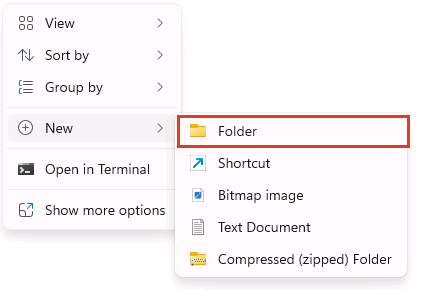
On a Mac: open Finder. From the menu bar at the very top of the screen, choose Go, then Home: this is your own folder. Choose File, then New Folder. A folder appears with its name ready to change: type
devand press Return. Double-clickdevto open it, and make your project's folder inside it the same way.On Linux: open Files. On Ubuntu, it is the folder icon in the column along the left edge of the screen; on Fedora and Debian, press the Super key, type Files, and press Enter. It opens in your own folder, named Home at the top of its window. Right-click an empty spot in the window and choose New Folder…. A small window titled New Folder asks for a Folder Name: type
devand press Enter. Double-clickdevto open it, and make your project's folder inside it the same way.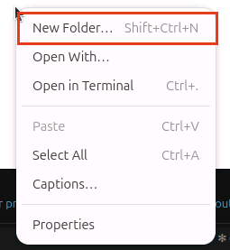
In Visual Studio Code, open the File menu at the top and choose Open Folder. A window for choosing a folder opens: find your new folder, click it once, and press the button that confirms the choice (on Linux, Select).
Visual Studio Code needs to know that you trust the files in this folder: you are their author. It may ask you in a window: choose the button that says yes, you trust them. Or it may open the folder in Restricted Mode, with a band across the top of the window saying so, and the Claude icon gone from the left: click Manage on that band, then Trust.
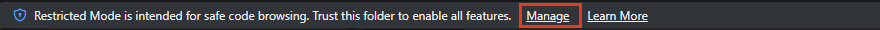
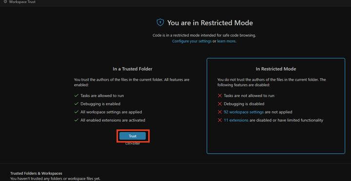
You know this step worked when your folder's name appears at the top of the left side of Visual Studio Code, with nothing listed under it, and the Claude icon is in the column on the left.
Before the last step: what Claude will do
When you send the message in step 6, Claude sets up your project on your computer and on GitHub. Two words first, because Claude may use them:
- A command is an instruction to the computer typed as words instead of clicked.
- A terminal, also called the command line, is a window where commands are typed and the computer answers in text. Claude types the commands for you; you see them, and their answers, in its panel.
Then Claude will:
Show you each command and its answer in its panel as it works. Its usual setting, which its panel calls auto mode, runs the safe ones straight away and stops to ask your permission for anything riskier, with buttons to allow it or not. It may still ask often in the first hour; that is normal. Read what each one says. When it makes sense, allow it. When it does not, or you are unsure, ask it to explain first: that is always a fair answer, and it costs nothing. Always ask before allowing anything that deletes something, asks for a password, or has to do with money.
Install three free tools that your project needs, if your computer does not have them yet: Git, which keeps every version of every file, so nothing is ever lost; GitHub's command line tool, which lets Claude talk to GitHub for you; and Node.js, which runs the project's own checks.
On Windows, Claude downloads and installs them, and you move no files. No setup window opens, but Windows may dim the screen once and ask "Do you want to allow this app to make changes to your device?" for Git for Windows, marked as a verified publisher. That one is expected: press Yes.
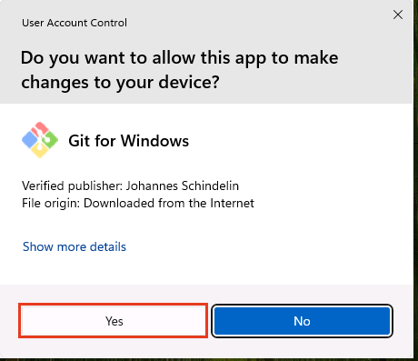
On a Mac, a window may appear offering to install Apple's command line developer tools: press Install, and agree to the license. Then comes the one place where you type a command yourself, because only you know your Mac's password: installing Homebrew, a free installer for developer tools, in Terminal, the Mac's own window for typing commands. Claude tells you when, and which line to paste. To open Terminal, press Command and Space together, type Terminal, and press Return: a plain window opens, with a line of text and a blinking cursor. Paste the line (Command and V) and press Return. When it asks for a password, type the one you use to log in to your Mac: nothing appears while you type it, not even dots, and that is normal. Press Return. It may ask you to press Return once more to go on. At the end it shows Next steps with two more lines: paste those too, one at a time, or copy what the window shows and give it to Claude.
On Linux, Claude installs Node.js and GitHub's command line tool for you alone, with no password. Git comes from the computer's own installer, which asks for your password, so if the computer does not have Git (Ubuntu and Debian do not; Fedora does), that line is the one you type yourself, and Claude tells you when and which line. Type it where Claude says: in Visual Studio Code's own terminal (its menu Terminal, then New Terminal; in a narrow window, Terminal is under the three dots), which opens at the bottom of the window, or in the Terminal app (press the Super key, type Terminal, and press Enter). Either shows a line of text and a blinking cursor. Type the line exactly as Claude shows it, and press Enter. When it asks for a password, type the one you use to sign in to the computer and press Enter: on Ubuntu a star appears for each letter, and on Fedora and Debian nothing appears while you type it, and that is normal. On Fedora, the first time, a few lines about using this with care come first. When the window shows its line with the blinking cursor again, Git is installed: tell Claude.
Also on a Mac, Claude may ask you once whether you will note each setup screen that looks different from this page, to help its makers. If you agree, you read exactly what will be sent before it goes, and you can say no.
Sign you in to GitHub. Claude shows you a short code, such as
ABCD-1234, and the addressgithub.com/login/device. Open that address in your browser, sign in to GitHub if it asks, then type the code or paste it, and press Continue and then Authorize. Only you can do this part. A code lasts about 15 minutes; if it runs out first, Claude makes a new one.Make your repository. A repository is your project as GitHub keeps it: every file, with every version. Claude makes yours private, so only you and anyone you invite can see it, names it after your folder, copies the project starter into it, and then copies it straight into your folder. Your folder then fills with files on the left of Visual Studio Code, and nothing has to be moved.
Ask you to close Visual Studio Code and open it again, once your folder has filled. A program that was already open does not see the tools installed after it, and your project's safety checks need them, so a new conversation in the same window is not enough. Close Visual Studio Code completely (on Windows and Linux, File then Exit; on a Mac, Code then Quit Visual Studio Code), open it again, and it opens your folder.
At the bottom right, Visual Studio Code then asks "Do you want to install the recommended 'Explorer Tasks' extension from Yokopoco Mayoko for this repository?" This is an extension your project suggests: it lists the things your project can do, such as checking its spelling, in a Tasks section at the bottom of the files on the left, each run with one click. Press Install. Visual Studio Code then asks whether you trust its publisher, and says the publisher is not verified, which only means the publisher has not proved who they are to Microsoft; the starter's makers read this extension's code before suggesting it, and it does nothing but show tasks. Press Trust Publisher & Install. If you would rather not, press the cross: nothing else depends on it.
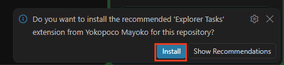
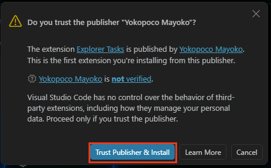
Ask you to start a new conversation in that reopened window. Your project carries its own instructions and safety checks, and Claude only reads them in a conversation that starts inside the project. Claude shows you how to start one in its panel; in it, type continue with the plan and press Enter.
What happens next
Setting up is in English. In that new conversation, Claude's first question is which language you want to work in, and from then on it speaks yours. Then it gets to know you, and then your idea, one question at a time. It explains its reasons and suggests an answer, but the decisions are yours, and you can always answer in your own words instead of picking a choice.
When it knows enough, it writes the plan and shows it to you as a page you can read anywhere. Nothing gets built until you say the plan is right.
After that, you can follow along at any time:
- Your progress page shows how far along the project is and how many hours it has taken. Ask Claude to "open my progress page".
- Your questions list holds anything Claude needs from you. Ask "what do you need from me?"
- To keep going, start a new conversation and say "continue with the plan".
Step 6: say hello to Claude
Open the Claude panel by clicking the Claude icon from step 3. Copy the message below exactly as it is: point at the gray box and press the copy button at its top right if one appears, or select all of its text and copy it. Paste it into the box at the bottom of the Claude panel and press Enter. Claude's answer appears above the box, and it begins by checking which tools your computer already has.
I am not technical, so explain each step in plain words before you do it.
First, if this open folder already holds a project of its own, with a .git
folder, stop there, change nothing, and tell me to follow the setup guide's
part for a project I already have. Otherwise: install Git, GitHub's command
line tool (gh), and Node.js for my user only, wherever that is possible, if any
of them is missing, but Git only through my computer's own installer, never
unpacked by hand, so that my computer's updates keep it safe, even if that
means I type my password; sign me in to GitHub through the browser with a
one-time code that you show me; make my own private repository from
App Architect, named exactly like this open folder, with "gh repo create"
and "--template noelito-projects/app-architect --private"; clone it into
this open folder itself with "gh repo clone", giving "." as the folder, so
that nothing has to be moved (if the folder is not empty, fetch the
repository into it without moving or deleting what is already here); then
tell me to close Visual Studio Code completely and open it again, so that it
sees the new tools, and then to start a new conversation in this folder and
type "continue with the plan" there, so that the project's own instructions
and safety checks are on from its first question.A project you already have
These take the place of steps 5 and 6 when you are adding the starter to a project of your own. Steps 1 to 4 come first, as they are written.
- In Visual Studio Code, open the File menu and choose Open Folder, then find your project's folder, click it once, and press the button that confirms the choice. If Visual Studio Code asks whether you trust the files, or shows Restricted Mode, trust them as step 5 shows. You know this worked when your project's own files are listed on the left.
- Open the Claude panel, copy the message below exactly as it is, paste it into the box at the bottom, and press Enter.
I am adding App Architect to this project, which already exists. I am
not technical, so explain each step in plain words before you do it. Install
Git, GitHub's command line tool (gh), and Node.js for my user only, wherever
that is possible, if any of them is missing, and sign me in to GitHub through
the browser with a one-time code that you show me. Then clone App Architect
with "gh repo clone noelito-projects/app-architect" into a temporary folder
outside this project, never into it, and change nothing in this project yet.
Read starter-kit/library/skills/adopt-the-starter/SKILL.md in that clone
and follow it from its beginning: it says what to ask me and what to do, and
it keeps this project's own branches untouched until I say yes. I may want only
some parts of the starter, so show me its menu of features before bringing
anything in.What happens next: Claude asks you a few questions, one at a time, mostly to check that it understood what your project's own files already say, and shows you the menu so you can take all of the starter or only some parts. It then works in a second folder of its own beside your project's, so your project keeps working as it does now while the starter goes in, and it asks you before anything reaches your project's own work or GitHub. Adding the starter can take several sittings; you can stop at any point, and the next conversation picks up where the last one stopped.
Sending lessons from a project
This is for a project that keeps its own way of working, when you only want to pass on what it learned, so the next project made from the starter begins with it. Nothing is added to your project and nothing in it changes. Steps 1 to 4 come first, as they are written, then open your project's folder as the first step of a project you already have says, and send Claude this message:
I only want to send lessons from this project back to App Architect, and
nothing in this project may change. I am not technical, so explain each step in
plain words before you do it. Install Git, GitHub's command line tool (gh), and
Node.js for my user only, wherever that is possible, if any of them is missing,
and sign me in to GitHub through the browser with a one-time code that you show
me. Then clone App Architect with "gh repo clone
noelito-projects/app-architect" into a short temporary folder outside this
project, never into it. Read starter-kit/library/skills/gather-lessons/SKILL.md
in that clone and follow it from its beginning.What happens next: Claude says what it will read, and asks whether it may also read your past conversations with Claude about this project, which is where most lessons are. It then looks for what any project would want, the skills your project wrote above all, takes out every private detail, and shows you each lesson before anything is sent. You say yes or no to each one.
If something goes wrong
- Claude asks you to wait because you have used your plan's share for now: that is normal. Come back when it says, and say "continue with the plan".
- A step fails, or a message makes no sense: copy the message to Claude and ask "what does this mean, and what should we do?"
- A screen looks different from what this page describes: tell Claude what you see, in your own words, and ask what to do. Even better, show it: on Windows press Windows + Shift + S, drag over the screen, and paste it into the chat with Ctrl + V; on a Mac press Command + Shift + 4 and drag the picture from your Desktop into the chat.
- A sign-in code from your phone or password manager is refused, on more than one site: your computer's clock is probably wrong. On Windows, open Settings, then Time and language, then Date and time, turn on Set time automatically, and press Sync now. On a Mac, open System Settings, then General, then Date and Time, and turn on Set time and date automatically. Then try a new code.
- You are not sure about something it wants to do: say "stop, and explain that first". It will.